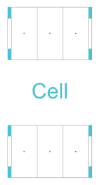
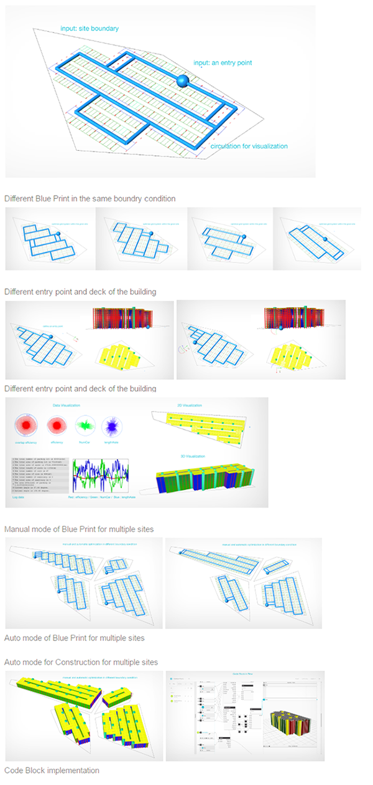

position : Application Engineer(Computational Designer)
Parkerator
[rule-based design system]
As a first project at Flux, I developped a multi-story car park (MSCP) configurator for SJ in Singapore. Among other requests, the idea of a “Parkerator”(Parking + Configurator: it is a plugin running on Flux flow and Grashopper to generate parking buildings ) was one of the most suitable projects for the implementation of computational design workflow for the following reasons:
(1) it should be fully automoted process before decision making phase,
(2) it should be modularized because the company uses precast modules in the construction phase,
(3) it should provide the maximum usage capacity possible for an arbitrary site
Singapore being one of the densest city in the world, the whole objective of the project was to leverage computer intelligence to provide the most optimized parking design for space allocation.
Rule based design as a design system
The first step in this project was to analyze the use case in Singapore, we then converted into parameterized criteria our learning, hence turning design rules into model parameters. Then, on the high level, we setup a hierarchical system for a Cell, which contains column, parking lot, core, aisle, ramp, and bridge, by research the use case in Singapore so that individual Cell can interact each other and controlled by Cell Graph that is top on the hierarchy.

image for parking module
Parkerator Phase 1
The aim of the initial phase is to give users a volumetric and numerical sense of what a basic rectangular parking building would be based on the number of cars that can be parked and the number of floors. In short, users input the number of car and the height of building, and the script automatically generates a 3D building model with an associated set of descriptive metrics.
Objective and problem:
Provide a volumetric sense of a basic rectangular parking building
Flesh-out the generated circulation in the parking building
Rapid prototyping for design spaces with the number of cars and the length of building
Simple descriptive metrics about the building
Parameters:
- Number of Car
- Number of floor
Class hierarchy in the c# code
* Building class
-Build (function related to create mesh and lines)
* Lot class
- isParkingLot (check for the status for building)
- isCore (check for the status for building)
- isRamp (check for the status for building)
- ... Data Structure for Parkerator Phase1
Parkerator Phase 2
The phase 2 was build to achieve 3 objectives:
(1) how to interact random site condition efficiently
(2) how to shape design space as a data, and provide users with the data for their intuitive design
(3) how can we discretize and improve the algorithms from Pakerator Phase 1
Grid Optimizer
To achieve 1st objective, we contrive a Grid Optimizer that shapes a grid system in which cell can be populated, in arbitrary boundary conditions. Basically, using brute force algorithm, it create a data set ranging from 0 to 360 degree to find a suitable grid where the rules apply, and find a best ratio and optimal situation in the given site context. In addition, it also provide users with a manual mode to explore the design space tracking individual set of parameters by shifting the parameter. Then, using “Find” option it automatically restore the optimal parameter in the data that user produce.
Data Listener for design space
For 2nd one, we create Data Listener which records parameters and visualize them as a graph. It draws a novel visualization which re-maps data to circular coordinate system to directly visualize data based on their own direction from 0 to 360 degree with the brute force algorithm. For the Manual mode, the listener keep recode every single change of parameter and visualize a 2D graph and circular graph so that designer create their own data visualization by play with the parameters.
Blue Printer & Constructor
For 3rd goal, the holistic process is discretized as two parts (1) Blue Print part (2) Construction part. This modification makes it more effective and parameterizable in the more complex programming. In the Blue Print phase, the algorithms concentrate on mathematical computation to shape semantic data of a parking building as a blue print. In that period, the grid optimization also happen. Once you create your own blue print, the data can be inject into Constructor to create actual geometries and draw them on viewport based on the API. For the implementation for different platform, we need to simply execute a function switching the API such as Flux Geometry API, RhinoCommon API, WebGL, or OpenGL in the Construction phase.
Objective and problem:
- Design building footprint based on an arbitrary site boundary conditions
- Include an arbitrary entry point
- Manual mode for those who want to explore the design space
- Optimal mode for those who want to find the optimal option in a mouse click
Parameter
- Site boundary condition (polyline)
- A entry point (point or vector)
- Auto mode / Manual Mode with degree (bool / number)
Data Structure for Parkerator Phase2
Constructor
- Analysis (for entry point because decks can have different levels based on the entry points)
- Build (compute meshes and draw them on screen)
DataListener
- DataListener (store the every combination of parameters while changing)
- DataVis (pie, Bar, graph, and parallel Coordinates chart for data visualization)
Cell Graph
- Build (produce a blue print that can be passed to constructor for 3D rendering)
- Cell (contain semantic properties of the different usage of each cell )
Aisle (circulation of cars)
Column (for streucture)
Lot (four distinct usage)
- ParkingLot (check for the status for building)
- Core (check for the status for building)
- Ramp (check for the status for building)
- Bridge (check for the status for building)
GridCell
- Analysis (compare the new data with the the data in the listener)
- Update
Custom Utility
- NVector (other utility to promote process)
- NPolyline (other utility to promote process)

Design Space exporiation and Data Visualization
This visualization and UI was built on the web with the Flux Javascript SDK.
Scenario one
- The parkerator P2 can create the data in all possible combination and push the data to the Flux Web.
- Designers can open the web and select the project and data key that we saved in the previous step
- It automatically generate the parallel coordinates visualization with the selected data.
- Designer can brush the data and select one of the parameters, and it automatically generate the mesh.
Copyright 2016. Flux Factory. ALL RIGHTS RESERVED.